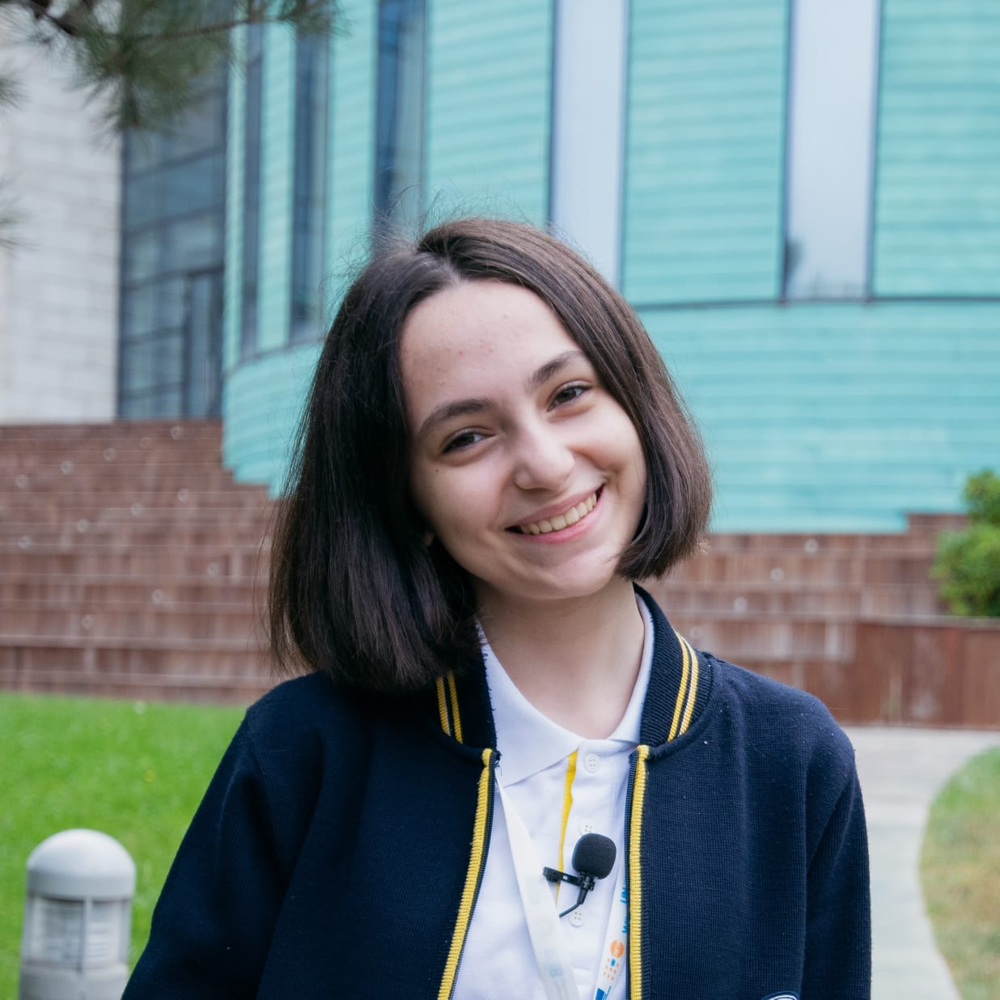
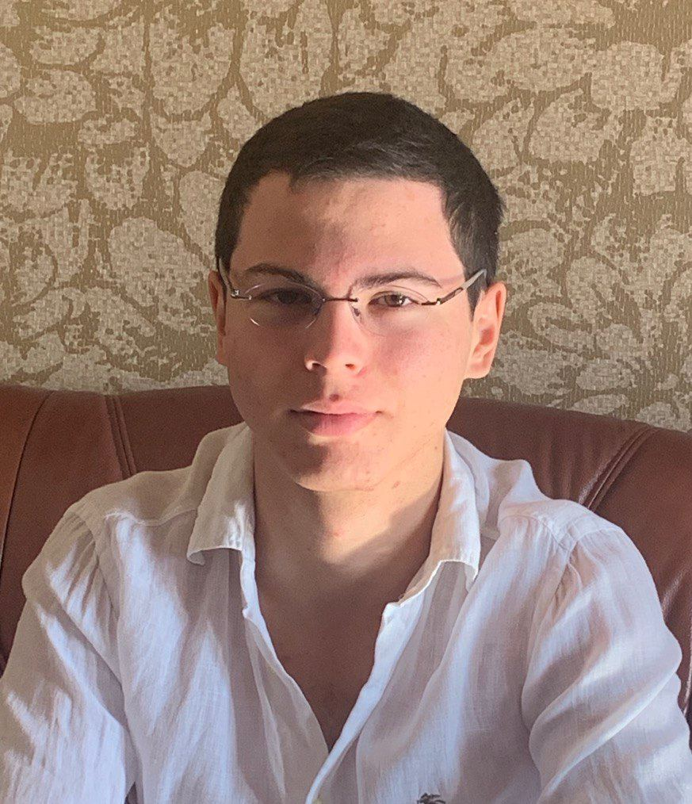

Meet Our Team Members⚡️
Meet Our Team Members⚡️
Nazli Nasirli

My name is Nazli Nasirli, a 17-year-old Mathematics major student at ADA University. I am passionate about solving complex problems and exploring the beauty of logic through math. In addition to my studies, I have a deep love for painting, which allows me to express myself creatively and find inspiration in the world around me. Painting teaches me patience and perspective, skills I carry into every aspect of my life. I am excited to continue combining my passions to grow both intellectually and artistically.
Fidan Khalilova
Fidan Khalilova, 17-year-old IT major student at ADA University, is a passionate and dedicated individual seeking an opportunity to contribute her skills and enthusiasm to a volunteering initiative. Her background reflects an eagerness to engage in community service and her ability to work collaboratively within diverse teams. Fidan's previous experiences showcase her proactive approach, adaptability, and genuine desire to bring about positive change. Eager to contribute to meaningful projects, She embodies the spirit of volunteerism and is poised to make a valuable and lasting contribution to any endeavor she undertakes. For more information, click the image!
Asma Hajizada

My name is Asma Hajizada, and I am 17-year-old Mathematics major student at ADA University.I am interested in coding and love solving problems through technology and mathematics. Volleyball is my favorite sport, helping me stay active and build teamwork skills. I also enjoy painting, which allows me to express my creativity, and also watching films. I have earned several school certificates from volleyball, and was awarded the Republic Medal for Azerbaijani Language and Literature. This reflects my dedication to both academics and my cultural roots. Balancing my studies with hobbies keeps me motivated and focused. I aim to use my skills in math and coding to create solutions that make a difference.
Egor Martynov
I am Egor Martynov, IT major student at ADA University. I have been programming and developing software for more than a year, and I am looking forward to further expanding my knowledge in this area. In addition to tech, I also enjoy reading books. Sporting activities are another thing that I love, as they are fun and help me stay active.